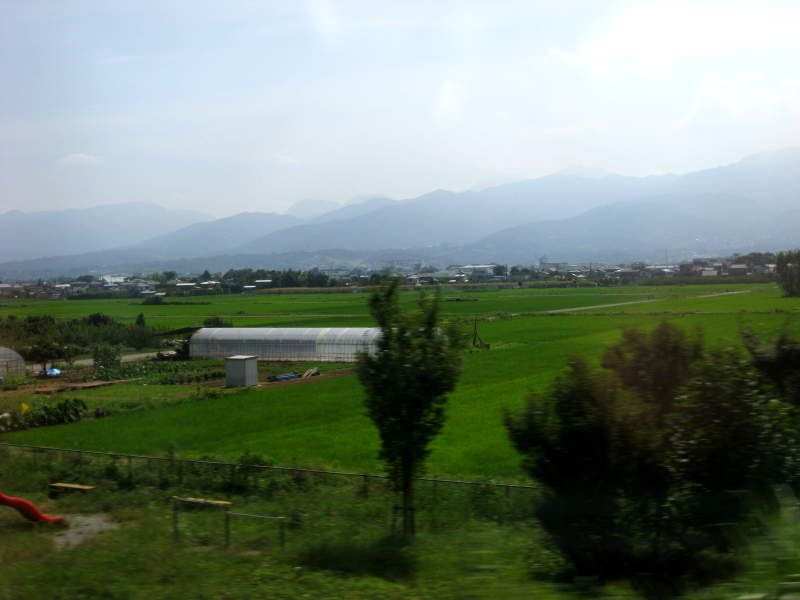
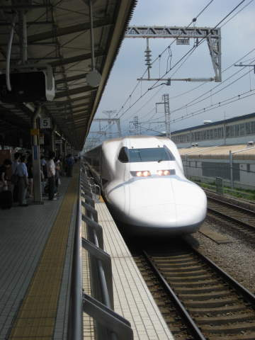
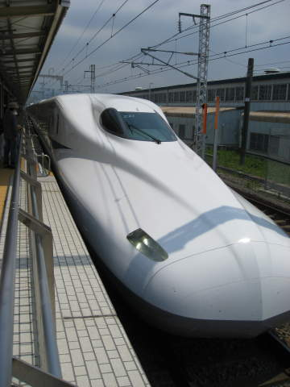

Mount Fuji(links to sections of the Mount Fuji area at bottom)

Here
we are on the train heading to the Mt. Fuji area. This experience
reminded me of when I was approaching Mt. Vesuvius by train. I
was playing "find the mountain". Are any of these mountains Mt.
Fuji? How would I know! However, these were the first
mountains I saw, and I didn't get a very good shot of Mt. Fuji from the
distance, so this will have to suffice.

These
were two Shinkansen trains I saw at Gotemba station. The Japan
railway system has different classes of trains. The Shinkansens
are the long distance trains that go regularly at speeds around 186
miles per hour.
The mountainGotemba Kogen ResortBack